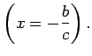
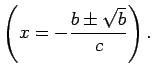

Inhalt Index DeskTop Bronstein

 Funktionen und ihre Darstellung Exponentialfunktionen und logarithmische Funktionen
Funktionen und ihre Darstellung Exponentialfunktionen und logarithmische Funktionen


Die Funktion
Für b > 0 verläuft die Kurve durch den Koordinatenursprung. Tangente ist in diesem Punkt für b > 1 die x-Achse, für b = 1 die Winkelhalbierende y = x des ersten Quadranten und für 0 < b < 1 die y-Achse.
Für b < 0 ist die y-Achse Asymptote. Für c > 0 wächst die Funktion mit x über alle Grenzen, für c < 0 geht sie asymptotisch gegen 0.
Für verschiedene Vorzeichen von b und c besitzt die Funktion ein Extremum A bei  Die Kurve besitzt entweder keinen, einen oder zwei Wendepunkte C und D bei 